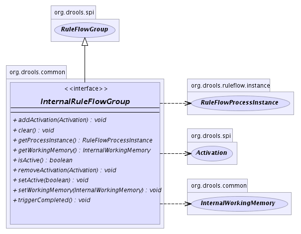

org.drools.common
Interface InternalRuleFlowGroup
- All Superinterfaces:
- RuleFlowGroup, java.io.Serializable
- All Known Implementing Classes:
- RuleFlowGroupImpl
public interface InternalRuleFlowGroup
- extends RuleFlowGroup
-
- 
setWorkingMemory
void setWorkingMemory(InternalWorkingMemory workingMemory)
getWorkingMemory
InternalWorkingMemory getWorkingMemory()
addActivation
void addActivation(Activation activation)
removeActivation
void removeActivation(Activation activation)
clear
void clear()
setActive
void setActive(boolean active)
- Activates or deactivates this
RuleFlowGroup.
When activating, all activations of this RuleFlowGroup are added
to the agenda.
As long as the RuleFlowGroup remains active,
its activations are automatically added to the agenda.
When deactivating, all activations of this RuleFlowGroup are removed
to the agenda.
As long as the RuleFlowGroup remains deactive,
its activations are not added to the agenda.
isActive
boolean isActive()
- Specified by:
isActive in interface RuleFlowGroup
triggerCompleted
void triggerCompleted()
getProcessInstance
RuleFlowProcessInstance getProcessInstance()